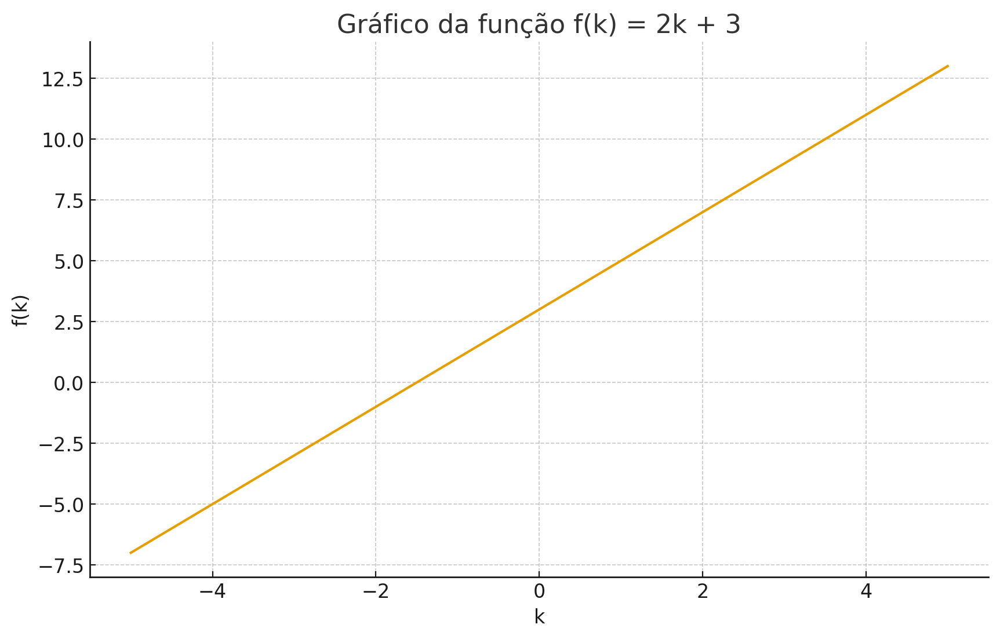

Por que aprender isso?
Funções do primeiro grau aparecem em dinheiro guardado, velocidade, jogos, aplicativos e previsões do dia a dia.
O que é a Função do Primeiro Grau?
Uma função do primeiro grau descreve uma reta. Sua forma geral é:
f(k) = ak + b
- a: coeficiente angular — a inclinação da reta;
- b: coeficiente linear — onde a reta toca o eixo Y;
- k: variável independente.
Exemplo do Cotidiano
Imagine que você economiza R$ 20 por semana e já tem R$ 50 guardados. A quantidade de dinheiro após k semanas é:
f(k) = 20k + 50
Isso já é uma função do primeiro grau!
Como Resolver uma Função do Primeiro Grau?
Exemplo: resolver
2k + 3 = 7
Passo 1: Isolar o termo com k:
2k = 4
Passo 2: Dividir pelos coeficientes:
k = 2
Propriedades Importantes
- O gráfico sempre é uma reta;
- Se a > 0, a reta sobe (crescente);
- Se a < 0, a reta desce (decrescente);
- b mostra onde a reta toca o eixo Y.
Exemplo Gráfico
Função crescente: f(k) = 2k + 3
Erros Comuns dos Alunos
- Trocar os papéis de a e b;
- Esquecer que b é o valor quando k = 0;
- Errar sinais ao isolar o k;
- Achar que toda função é crescente.
Exercícios (pratique!)
1. Um táxi cobra R$ 5 de bandeirada + R$ 2 por km. Escreva a função em termos de k.
2. A função f(k) = -2k + 6 é crescente ou decrescente?
3. Para a função f(k) = 4k - 8, quanto vale f(3)?
4. Desafio do Kalinkus ⚔️
Resolva: 3k - 5 = 16
🚀 Agora que você está pronto, será que consegue vencer os drones do Dr. Kalinkus no próximo desafio?